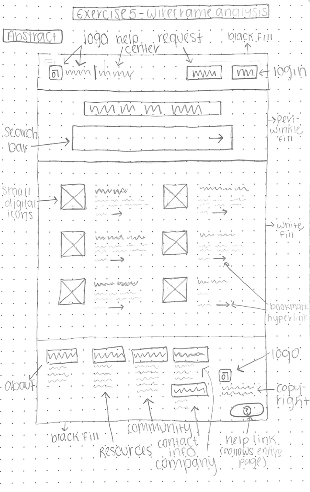

Pencil sketch wireframe
Style observations
- text: Britanica, semi-condensed black, a few different uses of font size and weight, center alignment
- palette: #4C5FD5, #000000, #dadbf1, #fff
- image: six small icon images placed in the center of page
- header: located on top, fixed position